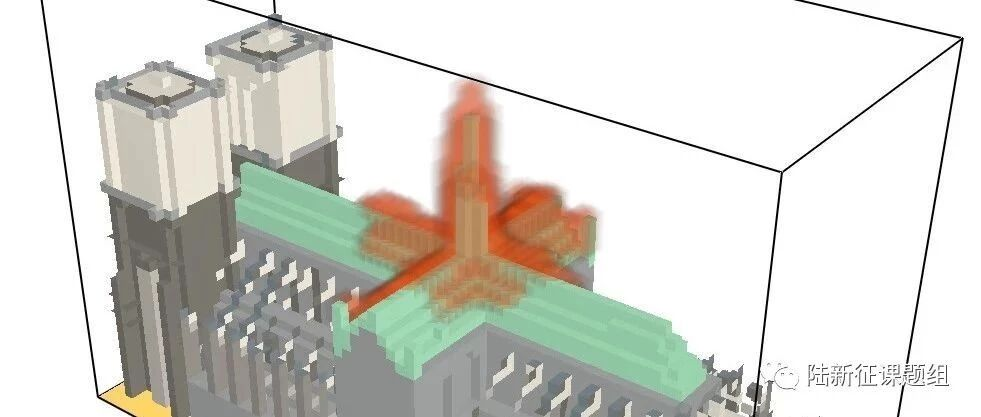

转载：巴黎圣母院火灾蔓延过程计算流体力学(CFD)模拟
本文转载自许镇教授的公众号”学术小镇“，许教授在城市震害仿真和可视化方面开展了很多创新研究工作，欢迎大家关注。

法国当地时间2019年4月15日下午6点50分巴黎圣母院发生火灾，这座人类著名历史建筑被大火严重破坏。在扼腕叹息之余，“学术小镇”通过计算流体力学CFD模拟手段再现了巴黎圣母院的火灾蔓延过程，为火灾事故原因调查提供了初步的参考。
1. 火灾蔓延CFD模拟
巴黎圣母院主体为砌体拱结构，上部覆盖木结构屋顶，因此，本次大火的主要蔓延区域是木屋顶部分，如下图深红色区域。

（图片源自BBC）
为模拟这次火灾事故，我们在第一时间建立了巴黎圣母院的计算流体力学CFD数值模拟模型，如下图所示。模拟平台为美国国家标准与技术研究院NIST研发的软件FDS（火灾动力学模拟器）。图中绿色部分为巴黎圣母院的木质屋顶，设置成可燃物，其他区域为惰性不可燃物体。

精细化的火灾CFD模拟耗时巨大，一般需要大型计算机，长达数日才能给出结果。在此次模拟中，我们在材料燃烧性能和燃烧时间方面都进行了简化和缩放处理，以最快时间给出结果。
历经12小时的资料收集、建模、模拟、讨论后，我们给出了巴黎圣母院火灾蔓延过程的CFD模拟结果，如下所示：

巴黎圣母院火灾蔓延过程CFD模拟
通过上述巴黎圣母院的火灾蔓延过程模拟结果，我们可以清楚的看到：火是从中间部分开始蔓延，先向上蔓延，烧毁了高塔Spire，然后向四周蔓延，烧毁了整个十字型木屋顶。
2. 与实际过程的对照
我们完成模拟后，恰好发现纽约时报梳理了巴黎圣母院火灾蔓延过程（可点击文末“阅读原文”查看）。我们将模拟结果与纽约时代结果进行了对照，以验证CFD模拟的合理性。
根据纽约时代的梳理，巴黎圣母院的火灾过程分为了3个阶段：
（1）尖塔周边开始起火
法国当地时间2019年4月15日下午6点50分，巴黎圣母院大教堂尖塔底部冒出火焰和烟雾。纽约时报与本文CFD模拟结果对照过程如下图所示。可以看出，本文模拟结果清晰地展示了起火区域的火灾烟气。

（2）火势蔓延到塔尖
当地时间4月15日晚上7时40分，火势蔓延到巴黎圣母院大教堂的尖顶上。可以看出，本文CFD结果蔓延范围与纽约时报整理结果吻合，均为尖塔及尖塔周边区域。

（3）火势蔓延到整个木屋顶
后来，火势逐渐蔓延到整个木屋顶，屋顶逐渐被燃尽。在本模拟结果中可以看出，模拟的蔓延范围与实际相符，而且还模拟了木屋顶被燃尽的情况。

从以上结果可以看出，本文CFD模拟的火灾蔓延过程与巴黎圣母院实际蔓延过程是相符的。因此，火灾蔓延CFD模拟结果可以为火灾事故调研提供参考。
需要说明的是：
（1）实际过程中，Spire尖塔由于底部结构被烧毁，无法承受上部重力，发生了倒塌。但CFD模拟中，无法加载重力并模拟其倒塌过程，这与实际过程所有不同。
（2）由于数据有限，本文CFD模拟不能做到很精细，只给出一种基本判断。如需深入调研事故原因，必须结合现场调查，开展详细的模拟。
3. 火灾蔓延原因浅析
从各种新闻报道和现场视频来看，大家不难发现：此次巴黎圣母院火灾的火势比较大（如下图所示），蔓延速度也比较快。7时40分，火势蔓延到巴黎圣母院大教堂的尖顶上；7时59分，巴黎圣母院中部的尖塔坍塌。中间只花了不到20分钟，木塔就被烧塌了。

（图片源自 NYTimes）
这里面原因很多，但是从木屋顶结构而言，其实这种屋顶结构形式类似架篝火，如下图所示。

这种架篝火形式，上部是木材可燃物，中间空洞部分可以提供空气，使得燃烧更加充分。这也从某一角度解释了火势为什么这么大以及蔓延为什么比较快。
尽管巴黎圣母院的木屋顶从建筑学角度是非常美的，但一旦起火，容易充分燃烧，引起大范围的破坏。
4. 结语，但并未结束
(1) 巴黎圣母院大火是人类文明的灾难，也是防灾减灾工作者应该高度重视的火灾事故。
(2) 本文的CFD模拟还原了巴黎圣母院火灾蔓延过程，为火灾事故调查提供了一种手段。但是，由于资料有限，此文模拟结果并不精细，有待进一步深入。
(3) 相信法国当局也会深入调查此次巴黎圣母院火灾的详细过程，为以后的文物防火提供重要借鉴，避免类似的悲剧发生。
最后，感谢我的研究生魏炜以及郑铭和薛巧蕊在12小时内完成了此次模拟，赞！
----------------------------------
欢迎关注“学术小镇”，一起探讨土木工程防灾减灾问题。

--End---
相关研究
长按识别二维码，关注我们的科研动态